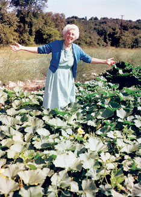

Sometimes living simply is, well, more complicated than you expect. In our first six months of living on a farm, one of our biggest challenges turned out to be our overwhelming success.
During breakfast one day last spring, I skimmed the late Ruth Stout’s classic No-Work Garden Book. Stout advises putting down a deep mulch to keep out weeds and hold in moisture. Decaying mulch also fertilizes, so it’s perfect for organic gardening. My husband was skeptical, but he quickly warmed to Stout’s strategy. Why invite work when a “no-work” strategy is available? We spent the rest of the day covering the freshly tilled garden with straw salvaged from our defunct hog barn.
Tomatoes were at the top of our garden wish list. I bought plants for their names - an ‘Early Girl’ to get us off to a good start and a ‘Big Boy’ and ‘Lemon Boy’ to keep her company. Remembering how much we had enjoyed eating heirlooms from an organic farmers market last year, I also got a ‘Black Krim’ and a ‘Brandywine.’
Thanks to Ruth Stout, little garden maintenance was required. By mid-July we had our first tomato. Then the tomatoes started exploding off the vines. Every day or two, we picked dozens of tomatoes. I used tomatoes in BLTs, salads, omelets and ratatouille. I froze them whole and gave them away by the bagful. By the second week in August, the deep freeze was nearly full and the tomatoes were coming on faster than ever.
To conserve space, I made sauce. I peeled tomatoes and threw them whole into the pot with whatever flavorings I had. Then I let the pot simmer for hours until its contents were rich, thick and dark red.
Whether you would find it better than commercial sauce, I couldn’t say. Frankly, it is not “simpler” to make than opening a jar that has predictable, consistent contents. On the other hand, last winter when it was wicked cold and we could only dream of the smell of a perfectly ripened tomato, I pulled a quart of tomato sauce from the freezer and was completely reconciled to our overwhelming success.
For more about Stout’s gardening method, read the article Ruth Stout’s System, and to “cope” with this summer’s tomato successes, see How to Dry & Freeze Tomatoes. - Mother
|
 COURTESY GARDENWORKS Ruth Stout recommended using heavy mulch to maintain a weedless garden. |
|
|